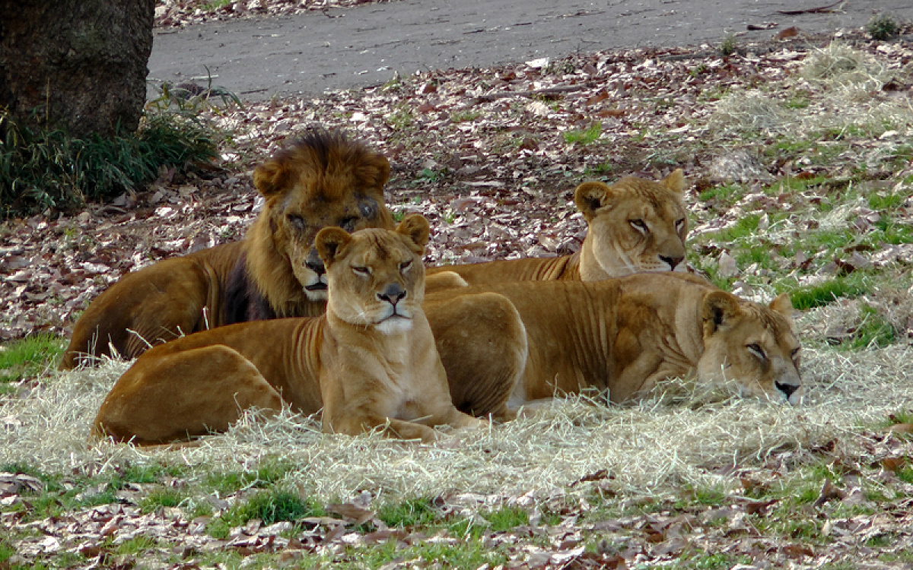

多摩動物公園は、約52ヘクタールという広大な敷地を持ち、動物をできるだけ自然で自由な姿で展示するために、檻のかわりに壕で仕切るようにし、広い放飼場に放養形式で展示をしています。また、野生で群れをつくる動物はなるべく群れで飼育するようにしている等、広さを活かしてのびのびと過ごす動物たちを見ることができます。約300種の動物を飼育おり、それらはアジア園、オーストラリア園、アフリカ園、昆虫園といったようにテーマごとでまとめられており、それぞれの園でユニークな体験を得ることができるでしょう。